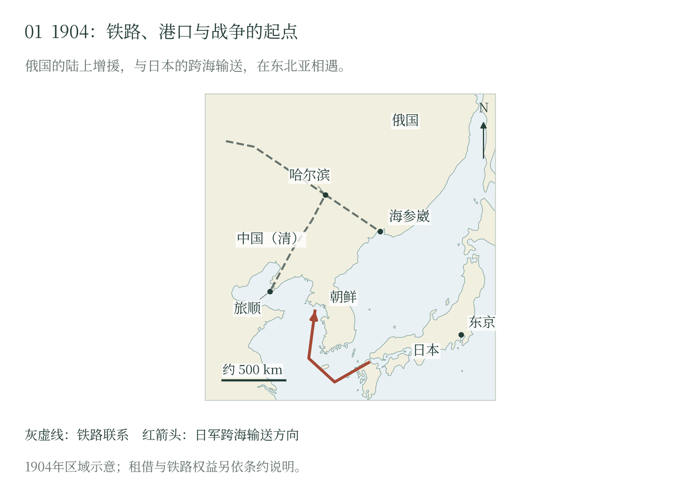

第一章 战区与作战条件
朝鲜与满洲如何进入战争
日俄战争的争夺对象，首先是朝鲜与中国东北的政治秩序。1894—1895年甲午战争后，《马关条约》规定清朝承认朝鲜独立，并将辽东有关地区割让日本。俄、法、德随后要求日本放弃辽东，日本于1895年归还该地。三国干涉使日本认识到，战场所得还要经过列强关系的检验；俄国在干涉中的主导作用，也使辽东成为日俄关系的敏感地区。〔1〕
1898年，俄国取得旅顺、大连二十五年的租借权。条约保留中国主权，同时给予俄方广泛的军政管理权，并安排连接辽东的铁路支线。港口、舰队、炮台和铁路由此汇合成一个军事支点。1900年俄军大规模进入满洲，俄政府以侨民、铁路和边境安全解释出兵，声称驻军只是临时措施，实际控制却随驻留扩大。〔2〕
1902年俄清协定规定分三个六个月阶段撤军，并附有恢复秩序及其他列强不构成障碍等条件。1903年第二阶段期限届满，撤军未如期完成。美国公使康格报告，部分俄军转移到旅顺或铁路附近，牛庄行政仍未交还中国。驻军是否长期化，因而成为外交争执的中心。〔3〕
日本同时改善自己的国际处境。1902年英日同盟规定，在约定利益范围内，一方与另一国交战，盟国保持中立并努力阻止第三国干预；其他国家再加入敌对行动时，盟国承担共同作战义务。这项有条件的安排提高了列强联合干预的风险，使日本筹划战争时拥有较可靠的外交后方。〔4〕
1903年的谈判仍有交易空间。日本提出承认俄国在满洲铁路经营方面的特殊利益，换取俄方承认日本在朝鲜的优势地位；日方方案既宣示清、韩独立与领土完整，又要求专属指导朝鲜改革和军事援助。俄国反方案接受部分日本利益，同时限制朝鲜的战略用途，提出在北纬三十九度以北设中立地区，并把满洲排除在日本利益范围之外。双方争论的“利益”，具体关系到军队能够进入何处、谁能建设设施，以及铁路如何延伸。〔5〕
日本试图把朝鲜与满洲联系起来处理，俄国则压缩满洲问题的交涉范围。撤军失约、方案反复和军事准备相互强化了对方将利用拖延扩大优势的判断。1904年2月4日，日本政府决定结束交涉并采取军事行动，6日通知断交。这个选择把尚在争论的地区安排，交给了海陆军去改变。〔6〕
一场东亚战争的世界尺度
交涉决裂的背后，是两国对东亚秩序的不同要求。日本要在朝鲜取得政治、军事上的优势，把对岸置于自己的安全安排之中；俄国要保住铁路、旅顺基地与满洲权益，并限制日本继续扩大势力。双方都把已经取得的位置看作应当保卫的利益，又把对方增兵、筑路和经营港口视为迫近的威胁。安全忧虑遂同帝国扩张缠在一起。 〔7〕
中国东北与朝鲜有自己的政府、居民和政治要求。日俄谈论缓冲地带、铁路保护和军事指导时，实际争的是在这些社会中行使多大的权力。朝鲜被日方纳入前进基地的筹划，中国东北则承受驻军与设施控制。把两国动机说清，也须看见被它们拿来安排安全的地方原有主人。 〔8〕
战争的力量来自更远的地方。英日同盟把东亚竞争同英国牵制俄国的需要接起来；伦敦与纽约的公债市场，又为日本军费提供资金。日本赶在开战前从意大利购入“春日”“日进”，船厂工人连夜赶工，舰艇尚有设备未装妥便须准备远航。银行、船厂与海外航路，把远方的资本和劳动送进东亚战场。 〔9〕
部分学者因此以“第零次世界大战”（World War Zero）讨论这场战争。这个后来提出的史学称呼，着眼于战争的全球联系和二十世纪战争形态的成长。直接交战的主体是日俄，主要战场集中在东亚；其背后的联盟、融资、军备采购与观察活动，却牵动了多个国家。把两种尺度放在一起，才能理解一场地区战争何以引起世界性的震动。 〔10〕
军事上的变化尤其具体。机枪、火炮与壕沟结合，提高了守方杀伤进攻者的能力；炮兵隐蔽配置，靠观察和电话联系组织射击，工兵则为步兵开辟接近的道路。武器的效力愈强，各兵种之间的配合便愈要紧。部队在火力中停下来，后方还得不断运来炮弹、粮食和替补人员，补充物资的规模和速度，也开始左右前线能采取什么战术。 〔11〕
海上，钢甲舰队争夺制海权，侦察舰的无线电报告，把分散的搜索接到主力舰队的行动上。运输船能否持续通行，关系到大陆军队的补充；远航舰队沿途的煤炭、修理与港口安排，也考验着国家组织战争的能力。陆地与海面的战斗，因而须放在同一张战略地图上理解。 〔12〕
各国观察员把战场经验带回本国，经验又要经过军队自己的组织和训练才能发生作用。美国炮兵部门依据满洲观察报告推动编制改革，正是这种转化的一例。战争给出的教训，既有如何集中火力，也有如何把观察、通信和指挥接在一起；枪炮已经到手，军队还须学会怎样使用。 〔13〕
战后的影响越过了战区边界。日本胜利动摇了欧洲种族优越观念，给亚洲民族运动带来鼓舞；俄国的失败损伤沙皇威信，并改变英国衡量俄国威胁的尺度，为此后的英俄接近创造条件。日本在朝鲜与南满的扩张又引起新的竞争。同一场胜利，在不同社会中可以成为自强的希望、统治的危机，或更深的支配。 〔14〕
港口、铁路与集结速度
两国进入战场的道路不同。日本通过海运把军队送往朝鲜和辽东，俄国依靠横贯亚洲的铁路增援。西伯利亚铁路与中东铁路相连，哈尔滨又连接通往奉天、辽阳、大连和旅顺的南部支线。资源沿铁路集中到少数车站、桥梁和仓库，一处枢纽的得失便可能牵动整条战线。〔15〕
俄国幅员辽阔，援军却得沿着一条漫长的铁路赶往远东。开战初期，绕贝加尔湖铁路尚未贯通，人员和物资还要靠渡船及冬季临时办法过湖。美国观察员克洛曼记述，士兵曾下车步行越过冰面，沿途设有食物和热饮供应点。到了1904年秋，绕湖线开始承担运输，设施和车辆逐步增加，更多援军才得以进入战场。 〔16〕
铁路还要同时输送马匹、火炮、弹药和粮食，安排伤病员后送，并为维修周转留出能力。部队抵达车站后，需要卸载、补充和开进，沿线守备又占用一部分人力。俄军指挥者因此既想等待兵力增长，又必须保住等待所依赖的交通线和基地。越向南展开，前线越接近旅顺，也越远离北方增援的入口。〔17〕
俄国海军分处旅顺与符拉迪沃斯托克。前者面向黄海并连接满洲铁路，后者可以进入日本海袭击运输。两支力量给日本造成不同方向的威胁，彼此集中又受到距离、通信和日本舰队拦截的限制。俄方须在保存舰艇、支援基地和集中决战之间选择；日本则要在护送运输、封锁旅顺和追捕巡洋舰之间分配军舰。〔18〕
海运怎样转为陆上战力
日本的运输距离较短，人员与装备却集中在易受攻击的船舶上。海军必须让运输按计划持续，陆军才可能在大陆形成优势。舰队自身也需要煤、水、食品和维修。1904年3月制定的前进基地军需与通信规程，将补给申请和送达纳入制度；本土基地、前进据点与供应船共同决定军舰能够在海上保持多久。〔19〕
部队上岸以后，还要等火炮、马匹和辎重卸完，才能离开滩头向远处行动。港口能卸多少货，陆路能运走多少，仓库里已有多少储备，都关系到部队能走多远。日本第一军从朝鲜西岸北上，到四月下旬才在鸭绿江准备渡河。数周之间，分批到达的步兵、炮兵和辎重才逐渐合成一支能够持续作战的军队。 〔20〕
这些准备也动用了地方资源。日方计划征集搬运人员和牲畜，并把道路、卫生、粮食与电报一并安排。村落和市场因军事运输而改变日常运转，居民承担的劳动、财产与人身损失构成战争成本的一部分。进入中国和朝鲜的军队，都把本国动员能力同当地社会能够提供或被迫提供的资源连接起来。〔20〕
日本要赶在俄军援兵充分到达以前取得据点，俄国则要守住基地和交通，等候后续部队。两国都在争取时间，只是所能承受的等待长短不同。日军向内陆深入，海港到前线的路程随之拉长；俄军向北退却，也可能使旅顺更难得到支援。此后的渡河、登陆和会战，都受着这两种急迫的牵引。

铁路把俄国增援送向哈尔滨、奉天和辽东港口，日本则通过海路把部队投向朝鲜。旅顺与海参崴分处两个海域，既能威胁日本运输，也增加俄舰集中行动的困难。
随文简图 · 自然地理底图：Natural Earth；历史依据见本章注及大图1逐图来源。大图1（图册第1页）